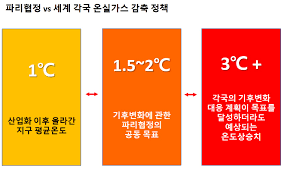

청소년 기후 소송단은 총 4개의 단으로 구성되어 있고 그중 (10대) 청소년단은 3개의 목표를 가지고 공부하고 활동하고 있다.
IPCC에서 195개국이 1.5도를 넘기지 않기로 약속한다.
2도를 넘기면 지구와 모든 생명의 생존이 어렵기 때문에 1.5도를 한계점으로 지정.
195개국은 1.5도를 넘기지 않게 하기 위해 여러 활동과 노력을 한다.
이것을 1.5도 특별 보고서라고 한다.
1.5도 특별 보고서 검토(IPCC)
기후 변화에 관한 정부간 패널(氣候 變化에 關한 政府間 패널,
Intergovernmental Panel on Climate Change, 약칭 IPCC)은
국제 연합의 전문 기관인 세계 기상 기구(WMO)와 국제 연합 환경 계획(UNEP)에 의해 1988년 설립된 조직으로,
인간 활동에 대한 기후 변화의 위험을 평가하는 것이 임무이다.
IPCC는 연구를 수행하거나 기상 관측을 하는 조직은 아니다.
기후 변화에 관한 국제 연합 기본 협약(UNFCCC)의 실행에 관한 보고서를 발행하는 것이 주 임무이다.
IPCC는 독자적인 연구를 추진하지 않으며 기후변화를 감시하거나 관련 현상으로 야기되는 문제 자체에 대해서는 발표하지 않는다.
IPCC의 주된 활동은 UNFCCC에 관련된 의제의 실행 여부에 대한 주제 보고서를 작성하고 출판하는 데 있다.
UNFCCC는 중대한 기후 변화가 일으킬 수 있는 가능성에 대한 인정하는 내용을 담은 국제협약이며 그 구체화가 교토의정서이다.
IPCC는 저작물에 대한 검증을 관련 분야종사자에게 맡기고 있으며 과학적인 근거를 확인한다.
가입국은 WMO와 UNEP 회원국에 한정한다.
실제로 IPCC가 발표하는 보고서는 기후변화 논쟁 및 공식 토론에서도 널리 쓰이고 있다.
각국 및 국제사회의 기후변화에 대한 관심도가 높아짐에 따라 전반적으로 국제연합의 기후협력패널에 대해서는
상당히 설득력이 있는 것으로 받아들여지고 있기도 하다.
부의장이었던 이회성이 2015년 10월에 의장으로 당선됨으로써 첫 한국인 의장이 되었다.